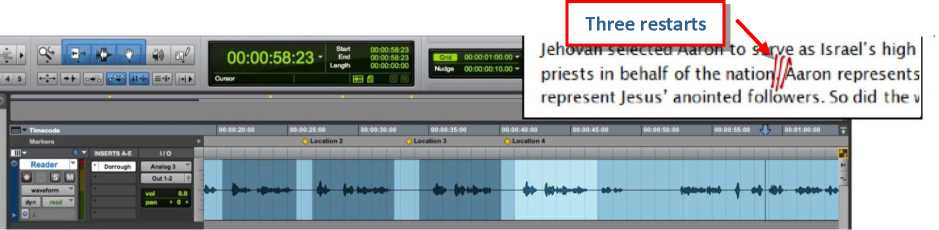

December 2015
This document should be made available to all personnel working with audio and video projects. Relevant portions should be translated if necessary.
Note: Not all of the aspects outlined in this document apply to the translation and recording of JW Broadcasting programs.
OVERVIEW OF THE PERSONNEL INVOLVED
Qualifications for readers and voice actors
During the translation process
Formatting the text to produce the recording script
Reader selection and scheduling
Prooflistening (audio publications only)
Review of prooflistener’s comments (audio publications only)
Fixes and in-studio check (audio publications only)
Final prooflistening (audio publications only)
Audio mixing, insertion of subtitles and OST (videos only)
Final approval and language overseer review
PREPARATION FOR WEB DISTRIBUTION AND/OR CD PRODUCTION
OVERVIEW OF THE PERSONNEL INVOLVED
1. The Translation Department is responsible for all the content-related work such as reader selection, script preparation, coaching, following, prooflistening, and program approval. (HWC:HWB June 14, 2012, No. C-8307W) The project team that worked on a publication is in the best position to make sure that its recording conveys the right thoughts and spirit in an effective way. The Audio Department deals with the technical aspects of recording and editing audio. Audio recording projects require a good degree of cooperation between Translation and Audio departments.
2. The translation overseer makes sure enough personnel and resources are allocated to care for audio-recording projects. He approves the recommendations made by the language overseer as to who should be included in the pool of readers and voice actors. (See paragraph 18.) He approves any re-recording or re-editing after the project team gives its final approval to the recording.—See paragraph 64.
3. The language overseer makes sure the recommended workflow is followed and schedules are met, chooses the coach for any given audio project, and participates in the selection and scheduling of readers.
4. The responsibility to give the final approval for a recorded program rests with the project team, but the language overseer should keep an eye on the quality of the recordings being produced, and may need to give helpful direction to the project team as they shoulder this responsibility. If the team is relatively inexperienced, he will make sure to provide more help and direction before the final approval is given. For more details on this role of the language overseer, see paragraph 64.
5. In a remote translation office (RTO), the language overseer would also oversee audio recording personnel. The Teaching Committee and Audio/Video Services provide direction on technical matters related to audio recording equipment and software, but in terms of department organization, audio personnel in an RTO report directly to the language overseer, since he is closely involved with the scheduling of the day-to-day work. The Branch Committee may ask an RTO language overseer to make recommendations regarding personnel and equipment. It may also assign him to take the lead in scheduling conferences with the RAVC to discuss equipment and personnel needs of the RTO. Personnel and equipment requests should then be sent via letter to the Teaching Committee for approval.
6. The project team that translated a publication will also be jointly responsible for the production of its audio version, or of the audio track and/or subtitles in the case of videos. One member of the team, selected by the language overseer, will serve as the coach. The other two members will join him in the studio and one of them will fill the role of follower. The language overseer may leave it to the project team to assign this role. If there is not enough space in the recording studio for all three members, two will suffice. The team is jointly responsible for preparing and formatting scripts and for the content of on-screen text (OST), labels, inserts, subtitles, icons, thumbnails, and taglists. For some of these functions, the language overseer can assign somebody else in the department to assist the team.
What if one member of the team is not available at the time of the recording? The recording can still take place, as long as the coach is present. The other team member will fill the role of the follower.
What if the recording project is exceptionally long and the language overseer feels that the team cannot afford to work in the recording studio for the whole length of the recording project?
If it is not possible for the whole project team to be involved with the recording, the language overseer may assign another trained individual outside of the language team to be the follower. In this way, while the coach is busy with the recording project, the other two members of the team can either translate simple material that may be handled by a reduced project team of two, or they can be joined by a backup translator. (See the box at the end of the “Translation Workflow” document.) However, this should not become the rule.
What if the project team that translated a publication is no longer available at the time of the recording?
Ideally, the recording of an audio project should take place as soon as possible after the translation is finalized. In this way, all the members of the project team are still available and have the material still fresh in their minds. When an older publication needs to be recorded, the language overseer will decide who will handle the project.
7. The coach for any given audio project should be chosen by the language overseer from the project team that translated the content. Where necessary, the makeup of project teams can be adjusted to achieve this objective.
8. A coach should meet the following qualifications.
■ The coach should be a brother, preferably an elder, since he will be taking the lead during recording.
■ The coach must be fluent in the language being recorded and understand cultural norms.
■ The coach should be a good communicator and teacher. He must understand the full meaning of the material being read, recognize which thoughts should be emphasized and how to do so in order to convey the proper meaning. He should also be able to explain this clearly to the reader. He needs to be very friendly and kind, and to have the ability to make readers feel at ease. During recording, he should be receptive to comments from the recording technician, other members of the project team, or others, with the goal of making the best possible
How can less experienced coaches be trained?
A more experienced coach can be assigned to work with them for a period of time. In some places, there are brothers or sisters in the field that are professional directors, actors, or dubbers. Their help can be enlisted in training coaches, or when working on particularly challenging projects, such as lip-synched videos.
recording. However, he cannot
delegate the responsibility for content approval to the recording technician. He and his project team should
collectively carry this responsibility, recognizing the full seriousness attached to it.
9. During the recording sessions, the coach must be alert both to specific elements of the reading as well as to the overall performance. If there are any problems in these areas, they must be corrected during the recording session. If problems are not discovered until later, much time will have been wasted. In coaching the reader, especially when a portion of the text needs to be re-read, the coach will make sure that the way he makes suggestions lessens tension rather than increasing it. In identifying reading problems, the coach will benefit from the input of the other members of the team.
10. The language overseer must be sure that those assigned as coaches are humble, receptive to suggestions, and willing to carry out all aspects of this assignment in consultation with the other members of their project team.
11. Another member of the team will serve as the follower. The follower’s assignment is to ensure that the reader's words match the printed script and to alert the coach of any differences. He or she will be attentive to the proper pronunciation of all words, and must be aware of any standards established by the language team.—See box on page 15.
12. The recording technician is responsible for the technical aspects of the recording. He is assigned to:
■ Routinely evaluate the recording facilities. Identify any issues and help to resolve these.
■ Set up the recording equipment. Ensure that microphones, audio input/output devices, computer workstations, monitors, and talkback system are all fully functional. Prepare all necessary Pro Tools session files before recording.
■ Operate the recording system and monitor the recording quality. The recording technician must pay careful attention and notify the coach of problems with volume changes, noises during recording, and the reader's voice quality.
13. Brothers or sisters may be used for this assignment. In either case, those chosen to be recording technicians should have the following qualities:
■ Aptitude. It is not necessary to look for individuals who already have audio recording experience, although this may be helpful. Of greater importance is aptitude and willingness to learn.
■ Computer literate. He or she should have a basic working knowledge of how to operate a computer. This will be a good foundation for learning to use audio recording and editing software. Experience with Apple Mac computers is not required. With approval from the Teaching Committee, additional training for recording technicians can be coordinated through the RAVC.
■ Detail-oriented by nature. The nature of the recording work requires great attention to detail. In some cases, it may not be possible to find a recording technician who is fluent in the language being recorded. This calls for special care and meticulous record-keeping.
14. After a recording session, the audio editor is assigned to finalize the recorded content for distribution. This role may be filled by the recording technician or by another brother or sister with similar qualifications.
15. After the recorded audio has been edited, the prooflistener’s assignment is to compare the recording with the formatted script. The goal is to identify any unintended omissions or changes in the recording and any pronunciation errors, and to make a note of these in the script. The prooflistener will also note in the script any problems with the audio quality, such as noise, distortion, or sudden volume changes. The prooflistener, who will be assigned by the Translation Department, must be detail-oriented and fluent in the language being recorded. Sisters often excel at this assignment. Normally, prooflistening is done by someone who is not part of the project team, in order not to slow down the team’s translation work. A number of individuals outside of the Translation Department can be trained for this work and used on a part-time basis as needed.
16. If possible, it is best to alternate prooflistening with other assignments. It is usually best to work at prooflistening for a half-day at most, so that the prooflistener does not become fatigued and less attentive to detail.
Note: The workflow for video publications does not involve a prooflistener. The whole team, together with the audio editor, will review and check the completed audio recording and, at a later stage, the master file.
17. Readers (and, in the case of videos, voice actors) will have a huge impact on the overall
teaching value of a publication. Although someone may be considered a good reader at congregation meetings, this does not mean he will automatically do well reading for an audio publication. Try to identify and train a number of good readers, so that you can alternate their use for the sake of variety.
18. The language overseer and those assigned the role of coaches will audition and recommend those who may qualify as readers or voice actors. When a potential reader or voice actor is identified and the coordinator of the body of elders confirms that he or she is in good standing and exemplary, invite him or her for an audition reading. This audition should be recorded and filed for future reference. The language overseer and the coaches will then review the reader’s performance and decide whether he or she should be recommended to the translation overseer, who will be responsible for the final approval. Periodically, the language overseer should make sure that all approved readers and voice actors are still in good standing and exemplary. In the case of Bethelites, he will do this by consulting with the Branch Committee. Whenever a new reader or voice actor who has not been previously approved is identified, approval should be sought from the translation overseer before using him.
Qualifications for readers and voice actors
19. For reading publications designed for teaching—such as the study edition of The Watchtower, or a book that will be studied at the Congregation Bible Study—an elder should be used if at all possible. If no qualified elders are available, a qualified ministerial servant may be used. There are projects and circumstances, though, in which others, such as exemplary sisters or young ones, may be better suited. The life story of a sister in a magazine or similar material, for example, may be better read by a sister. If there are doubts or questions in this regard, please refer these to the translation overseer.
Public Reading
When the apostle Paul told Timothy to continue applying himself to reading, Paul was specifically referring to reading for the benefit of others. (1 Tim. 4:13) Effective public reading involves more than simply calling out words from a page. The reader needs to understand the meaning of the words and comprehend the thoughts they express. Only when he does that can he convey the ideas correctly and reproduce the emotions accurately. This, of course, requires thorough preparation and practice. Hence, Paul exhorted: “Continue applying yourself to public reading." You will receive valuable training in this skill in the Theocratic Ministry School.
—Benefit From Theocratic Ministry School Education, page 26.
20. The reader or voice actor should be accurate and fluent in the language being recorded. When recording audio for videos or reading personal experiences, it may be desirable to choose a voice that matches the age, gender, and general
characteristics of the
character. When reading the
A tip for achieving naturalness
The reading should sound as if the reader was addressing each listener individually, not as if he was speaking to a large audience. To achieve this, and to help make sure the reader uses the appropriate tone and feelings, it may be useful to have a real person or at least a picture of a loved one in the studio to visually represent the audience. So, for example, if the reading is about children, have either a child or a picture of a child in the studio and have the reader pretend he is reading to that child.
life story of a foreigner or relating an account from another country, readers with a clear and understandable accent may be used if doing so would enhance the recording and would not be distracting.
21. The reader should be able to read with good modulation, apply proper sense stress, and convey the intent of what he is reading with minimal coaching. It is important to select only those who read well and can convey the intended message and feeling in a natural way. There is no need to deliberately read in a sanctimonious or overly emotional manner. Modulation, sense stress, and feelings should fit in properly with the nature of the material and its overall intent. Ideally, the listener should have the impression that the material is being narrated in an
extemporaneous way, and not read. When selecting readers, reading ability is much more important than years in the truth or position of responsibility in the organization.
22. The following charts provide an overview of the standard workflow.
AUDIO PUBLICATIONS
VIDEO PUBLICATIONS
23. Producing audio and video publications requires specific written approval from the Writing Committee. This approval is different from the approval to translate a printed publication. Approval for each recording project should be obtained before beginning production.
During the translation process
24. The translation process involves a number of steps in which the translated text is read aloud. This helps the project team to notice if some parts of the text are difficult or awkward to read, and to change them. At this time the team will also be able to determine the correct pronunciation of difficult words.
Note: Before starting to translate the script of a dramatic Bible reading or a video, the project team should review all the relevant Appendix outlines.
25. When translating videos, the project team will prepare any subtitles with MEPS Subtitles Editor (MSE). Mechanical aspects of this work can be delegated to somebody else in the Translation Department. Before preparing subtitles, be sure to review the contents of Appendix 12g, “Video Programs—Subtitles.” Instructions on how to use MSE can be found on the Software section of PPD, in the MEPS Subtitle Editor page.
26. Depending on the publication, thumbnails, taglists, on-screen text (OST), package inserts and label text will also need to be translated and proofread.
Formatting the text to produce the recording script
27. Before a translated publication can be recorded, the script that will be used for recording must be prepared and formatted for clear and easy reading. This may involve giving attention to font type and size, making sure that sentences do not break between pages, deleting markup characters that may distract the reader, and adding any additional wording that is needed to introduce the portions to be read. Study questions may need to be moved before the corresponding paragraph(s). Much of this work will be done automatically by WTS.
@t«lSS®S@SWhy We Must Be Holy&€T+OO3-
W--£Cfe0T<M0ZC¥0T<K003j 15 1.553 'You must be holy. firLEV. 11 45.SCT1003
4w£<C6OT<MO3^CYO3r<K6O3What should be our position regarding Jehovah's law on
Read Leviticus 8:^5,^6. Jehovah selected Aaron to serve as Israel's high priest, and his sons were to serve as priests in behalf of the nation. Aaron represents lesus Christ and Aaron’s sons represent lesus' anointed followers. So did the washing
■^w@IN THE book of Leviticus, holiness is referred to more often than in any other book of the Bible. Since this quality is a requirement for all genuine worshippers of Jehovah, understanding and appreciating Leviticus will help us to prove ourselves holy. ^‘4q.Blo: I .TigiHowcan the book of Leviticus help us?J ^Iblflho^yblThe book of Leviticus, written by the prophet Moses, is part of “all Scripture" that is beneficial for teaching. (2^JtTim. 3 ©16)Jehovah’s name appears an average of ten times in each chapter of the book. Getting the sense of Leviticus will strengthen us to avoid doing anything that would bring reproach on the divine name. (Lev .^22 32) The book's frequent use of the words ‘I am Jehovah" should remind us to obey God. In this article and the next, let us enjoy some sparkling gems found in Leviticus, a gift from God that helps us to engage in holy worship. •?fij3fol2^lqlWhat aresome features of Levitku^^
Theme text: “You must be holy. —LEV. 1 1:45.
Why should the cleansing of Aaron and his sons have deep meaning for all of Jehovah's people?
How is our obedience related to proving ourselves holy?
What should be our position regarding Jehovah's law on blood?
Paragraph 1. Question: How can the book of Leviticus help us?
IN THE book of Leviticus, holiness is referred to more often than in any other book of the Bible. Since this quality is a requirement for all genuine worshippers of Jehovah, understanding and appreciating Leviticus will help us to prove ourselves holy.
HO UNESS REQUIRED
Paragraphs 3 and 4. Question: What did the washing of Aaron and his sons represent? (See opening image.)
3 Read| Leviticus 8:5, 6.Jehovah selected Aaron to serve as Israel's high priest, and his sons were to serve as priests in behalf of the nation. Aaron represents Jesus Christ and Aaron's sons represent Jesus' anointed followers. So did the washing of Aaron
deep meaning for all of$ehovah's
t should the cleansing of^/iaron and his sons have people?gcnOO§-
This article will be studied during the week of January 5°- through
Why We Must Be Holy
lli-
Paragraph 2. Question: What are some features of Leviticus?
2 The book of Leviticus, written by the prophet Moses, is part of “all Scripture" that is beneficial for teaching. (2 Tim. 3:16) Jehovah's name appears an average of ten times in each chapter of the book. Getting the sense of Leviticus will strengthen us to avoid doing anything that would bring reproach on the divine name. (Lev. 22 :32)Thebook's frequent use of the words "I am Jehovah” should remind us to obey God. In this article and the next, let us enjoy some sparkling gems found in Leviticus, a gift from God that helps us to engage in holy worship.
28. Some publications may contain boxes or other supplementary information. To determine where these should be included in the recording, check the English WPUB that is available for viewing on the jw.org draft server and that appears later in its finalized format on jw.org. Footnotes are usually read where they appear in context. Note that you do not need to wait for the English audio recording to prepare the script.
29. Include in the script the text of all Read scriptures. If the insertion would disrupt the flow of thoughts in the script, you can include such text at the end of the paragraph.
Paragraph 13. Question: How do you feel about the fact that Jesus offered the value of
his blood to Jehovah?
Paragraph 13. Question: How do you feel about the fact that Jesus offered the value of
his blood to Jehovah?
1J Read Ephesians 1:7. The sacrificial death of Jesus Christ, who willingly ‘handed himself over for us,’ has profound meaning for all who love him and his Father. (G<
\ 13 Ephesians J :7 reads: “By means of him we have the release by ransom through the ^Brblood of that one, yes, the forgiveness of our trespasses, according to the riches of his jal- J ^undeserved kindness.1’ The sacrificial death of Jesus Christ, who willingly ‘handed 2:20) Nonetheless, it was what Jesus did a/terhis death and resurrection that truly [ | himself over for us,' has profound meaning for all who love him and his Father. (Gal.
...He said: "Whenever I get to thinking a great deal of myself, I take myself into the corner, so to speak, and say: ‘You little speck of dust. What have you got to be proud of?’" A humble attitude indeed!
.. He said: Whenever I get to thinking a great deal ot myself, I take myself into the
corner, so to speak, and say: You little speck of dust. What have you got to ne proud
of? ' (Read Isaiah 40:12-15.) A humble attitude indeed
Isaiah 40:12-15 reads: "Who has measured the waters in the hollow of his hand and en the measurements of the heavens with a span of his hand? Who has gathered in asure the dust of the earth or weighed the mountains in the balances and the hills the scales? Who has taken the measurements of the spirit of Jehovah, and who can instruct him as his adviser? With whom did he consult to gain understanding, or who teaches him in the path of justice, or teaches him knowledge, or shows him the way of true understanding? Look! The nations are like a drop from a bucket, and as the film of dust on the scales they are regarded. Look! He lifts up the islands like fine dust.”
30. Determine which scripture citations should be read—that is, when the name of the Bible book followed by chapter and verse range should be read aloud. Good judgment is needed in making this determination. It may not be wise to decide whether a scripture citation should be read or not solely on the basis of the number of words actually quoted from that scripture. Weigh the importance of the verse in the article or chapter. We want to alert our listeners that some key words or expressions that they hear are actually Bible quotations. However, we do not want to clutter the reading with too many citations.
Paragraph 2. Question: What are some features of Leviticus?
2 The book of Leviticus, written by the prophet Moses, is part of “all Scripture" that is beneficial forteaching.(J2Tim. 3:167)ehovah’s name appears an average of ten times in each chapter of the book. Getting the sense of Leviticus will strengthen us to avoid doing anything that would bring reproach on the divine name<(Lev. 22:32jJ~he book’s frequent use of the words “I am Jehovah" should remind us to obey God. In this article and the next, let us enjoy some sparkling gems found in Leviticus, a gift from God that helps us to engage in holy worship. x
Paragraph 2. Question: What are some features of Leviticus?
iragraph 2. Question: What are some features of Leviticus?
2 The book of Leviticus, written by the prophet Moses, is part of “all Scripture” that is beneficial forteaching. (2 Timothy 3:16) Jehovah’s name appears an average often times in each chapter of the book. Getting the sense of Leviticus will strengthen us to avoid doing anything that would bring reproach on the divine name. The book'^d_____
frequent use of the words “I am Jehovah” should remind us to obey God. In thiC and the next, let us enjoy some sparkling gems found in Leviticus, a gift from Got that
helps us to engage in holy worship.
|2 The book of Leviticus, written by the prophet Moses, is part of "all Scripture” that is beneficial for teaching. Jehovah’s name appears an average often times in each chapter of the book. Getting the sense of Leviticus will strengthen us to avoid doing ^nJSibrig that would bring reproach on the divine name. The book’s frequent use of the /I am Jehovah” should remind us to obey God. In this article and the next, let us enjoy some sparkling gems found in Leviticus, a gift from God that helps us to engage
in holy worship.
Citations may be read before or after the quotation, based on what the intended audience would be more comfortable with.—Compare French 03-20-14 B.
31. Research the correct pronunciations of unfamiliar words, names, and places, and indicate it in the script as a note for the reader.
Establishing and maintaining standards for pronunciation
If dictionaries are available for the language being recorded, determine which one will be used during recording and how it will be used. If there is no secular standard for pronunciation of certain words, establish the standard that will be used for recording projects. It is usually best to base such standards on what the majority of speakers in the language of recording say. This may require some research and consultation with good speakers of the language in the field, especially in the congregations. Checking with local radio and television stations may also prove helpful.
32. If necessary, adjust the text so that the reading makes sense as an audio recording.
How have governments performed in those three areas? Consider the evidencefon the following three pagesTj
How have governments performed in those three areas? Consider the following evidence.
33. The language overseer assigns the script formatter for each project. At least two members of the project team will then jointly review and finalize the script. It is critical that the team carefully checks that the script reflects exactly the wording to be used in the recording studio, since there is no later step in the process when the script will be rechecked against the original text.
Reader selection and scheduling
34. After a good number of readers and voice actors have been approved for a language, the coach will simply choose from this pool the individuals whom he feels are best suited for a particular project. His recommendation will be reviewed by the language overseer, who will guarantee that qualified readers are used in a balanced way across different recording projects. You do not need to wait for the English audio recording to determine how many readers will be used and how to distribute sections of the publication among them. You can use your experience and discretion in making these determinations.
Could the coach or another team member be used at times as the reader?
If he qualifies and the language overseer agrees, yes (with the assistance of the other team members). This can be very practical, for example, for last-minute reader substitutions. Use good judgment, though, to avoid using the same voices over and over.
35. The language overseer or someone designated by him will confirm that the selected readers are available and will coordinate studio scheduling with the Audio Department. There should be free communication between Translation and Audio departments at all times. Mutual respect and cooperation will make it possible to work out a schedule that accommodates the needs of all. Any difficulties that may arise in this regard may be brought to the attention of the translation overseer.
What should be remembered when selecting the cast for a dramatic Bible reading or a video?
• When selecting the cast for a dramatic Bible reading or a video, it is especially important to select voice actors who are able to convey a range of emotions in their voice.
• Try not to choose voices that all sound the same. Unique-sounding voices can help the listening audience to differentiate between characters. Also, take into consideration the age and traits of the characters.
• A preliminary selection, and any necessary auditioning, can take place before the script is finalized. In this way, when the script is finalized the team will be able to proceed quickly to the actual recording stage.
• While lip-synched videos require one voice actor for each major character, for videos translated by voice-over two or three voice actors may be sufficient. One male voice may be used for the narrator, another for male interviewees, and a female voice may be used for female interviewees. On the other hand, if a number of voice actors are available and this will not create complications, using more voices can add variety to the program.
36. The overall teaching value of an audio publication depends on diligent preparation by the reader. The formatted script should be sent to the reader in advance of the recording to allow enough time for him to prepare and practice. In the case of a video, voice actors will need to have a chance to watch it as part of their preparation. The coach should then meet with the readers or voice actors before the recording session to discuss the material to be read, making sure that elements like the theme, purpose, tone, and intended audience are clearly understood and that the reader truly connects with the material and lives it.
37. The reader should review and apply the guidelines from Benefit From Theocratic Ministry School Education, especially those included in the following lessons:
|
1 |
Accurate Reading |
9 |
Modulation |
|
2 |
Words Clearly Spoken |
10 |
Enthusiasm |
|
3 |
Correct Pronunciation |
11 |
Warmth and Feeling |
|
4 |
Fluent Delivery |
17 |
Use of Microphone |
|
5 |
Appropriate Pausing |
21 |
Scriptures Read With Proper |
|
6 |
Proper Sense Stress |
Emphasis | |
|
7 |
Principal Ideas Emphasized |
29 |
Voice Quality |
38. In the case of lip-synched videos, good preparation of voice actors is essential to produce an effective recording and to speed up the recording process. As soon as the actors have been chosen, the team should arrange for at least the main characters to watch the video and to analyze the script together with them as a group, identifying the main lesson of the video, the conflicts of the characters that demonstrate that lesson, and the function of each scene. This will help actors to understand what the key speeches in each scene are and what information should stand out. Even more, it will help them to express emotions with the appropriate intensity according to the plot line, thus greatly reducing the need for direction during practice sessions and recording.
A tip for voice actors
When preparing your lines, you may make notes in your scripts in order to remember where to insert pauses or reactions like sighs, moans and laughs, what inflections to use, if and where to sound hesitant, and so on. If you find it difficult to read a line with the correct feeling, you could write close to it an “alternative" speech that you will not pronounce but that will help you express the correct feeling (for example, if the script says “You are so judgmental," the alternative speech might be “I hate you!").
39. Other recommendations. In general, readers and actors should drink plenty of water in the days before recording, to be sure that they are well-hydrated. On the day of recording, the reader should avoid milk products. These tend to produce phlegm in the throat, which results in a sticky, clicking sound when speaking. During recording, drinking water with a small amount of lemon juice or vinegar added may help reduce mouth noise. The reader should avoid drinking very hot or very cold liquids, as these could cause his throat to tighten and change his voice. Warm water or tea with honey or ginger is recommended.
40. A fluent, experienced reader should not need extensive coaching during recording. However, the coach should pay attention to the overall feeling, pace, sense stress, and modulation. He should ensure that the main points of the reading stand out.
What if the reader or voice actor is illiterate?
In that case, as an exception to what is stated on paragraph 40, the coach could read one sentence at a time and then let the reader repeat it. Alternatively, an audio prompt can be prepared and used. It should not be difficult for the reader to memorize and repeat short sentences, imitating the pace, sense stress, and modulation of the coach or of the prompt.
41. During recording, if the recording technician or another member of the project team notices an error in the reading, he should inform the coach. The coach will stop the reader and explain what needs to be corrected. It is usually best to do this immediately. However, the coach may at times allow the reader to continue so that he maintains the flow of the reading, and make the correction later.
42. The coach must tactfully but clearly communicate with the reader throughout the recording session. This is essential for the success of the project. If a reader is tired, tense or nervous, he will make more mistakes. But in calling these mistakes to his attention, the coach must be careful not to increase his tension. The coach should be kind and try to put the reader at ease. If the reader keeps repeating the same mistake in a particular sentence, it may be good to take a break and help the reader relax.
A tip for coaching voice actors
When coaching voice actors, a special challenge is to make sure that the emotions they express are compatible with the way characters interact in the scenes. Rather than telling actors what emotions they should bring out (such as, “You should sound angry, but a bit melancholic"), the coach should help them express these emotions by using active verbs (for example, “Demand his attention!" or “Make him pay for it!").
Practice is required if you are going to cultivate the ability to read accurately. Read just one paragraph, and then do it again and again until you can read it without any mistakes. Then go on to the next paragraph. Finally, endeavor to read several pages of material without skipping, repeating, or misreading any words. After you have taken those steps, ask someone to monitor your reading and point out any mistakes that you may make.— be p. 84
Speak and read individual words clearly with proper enunciation, sufficient volume, and at a reasonable pace. Do not slur expressions or run words together in such a way as to make the meaning uncertain to your hearers. Hold your head up, and open your mouth sufficiently when you speak. Practice relaxing your neck, jaw, lips, facial muscles, and throat muscles.—be p. 87
Emphasis Proper emphasis is needed to draw contrasts, indicate the introduction of a new idea or
c^ change of thought, or to make a main point stand out.
Effective public reading involves more than simply calling out words from a page. The reader needs to understand the meaning of the words and comprehend the thoughts they express. Only when he does that can he convey the ideas correctly and reproduce the emotions accurately.— be p. 26
Some people use what might be termed "periodic stress" instead of sense stress. They emphasize words at fairly specific intervals, whether such emphasis is meaningful or not. Others emphasize function words, perhaps putting exaggerated stress on prepositions and conjunctions. When the emphasis does not contribute to clarity of thought, it easily becomes a distracting mannerism.— be p. 102
Enthusiasm
When reading for an audio publication, a reader will likely need to be more enthusiastic and animated than he would be when reading for the congregation. But care must be taken to keep such warmth and enthusiasm from being mechanical or overly dramatic. It should fit the message and nature of the material to be recorded.
It is not enough for [the reader] to prepare what he is going to say. He must live his subject, be emotionally involved in it.—be p. 115
Balance is needed. Some may be inclined to get excited about everything. They may need to be helped to realize that when a person becomes bombastic or overly emotional, his audience will be thinking about him rather than about the message.— be p. 117
Most advanced readers will pause appropriately for punctuation. However, even experienced re rea readers may still have trouble with pausing. Sometimes additional pauses are needed in complex sentences in order for the listeners to grasp the thought clearly, even when no comma is present. However, a mistake to avoid in this regard is pausing for a breath in the middle of a thought where there is no punctuation, breaking the continuity of the thought.
In preparing to read publicly, you may find it helpful to mark the printed material from which you will read. Draw a small vertical line where a brief pause, perhaps just a hesitation, is to be inserted. Use two closely spaced vertical lines for a longer pause. If you find that certain wording is awkward for you and you repeatedly pause in the wrong place, make pencil marks to tie together all the words that make up the difficult phrase.
Then read the phrase from beginning to end. Many experienced speakers do this.— be p. 97
Naturalness
Even an experienced reader may be nervous when recording. This can affect the naturalness of his reading. Other readers may be excellent in their accuracy and sense stress, but their pitch or pace may sound rehearsed and unnatural. (See “A tip for achieving naturalness, ” on page 10.)
Naturalness in public reading requires effort. To achieve it, identify the principal ideas in the material that you are going to read, and observe how these are developed. Have this clearly in mind; otherwise, you will simply be reading words. Check the pronunciation of unfamiliar words. Practice reading aloud so as to get proper inflection and to group the words together in a way that conveys thoughts clearly. Do it again and again until your reading is fluent. Get to know the material well enough that when you read it aloud, your reading sounds like spirited conversation. That is naturalness. ... Whether you read the Bible or other materials, read portions that embody quotations in a way that makes the material live. If a number of characters are quoted, alter your voice somewhat for each one. A word of caution: Do not be overly dramatic, but do put life into the reading in a natural way.— be p. 130
43. After the recording, the coach can help readers improve by giving instructive, progressive counsel. The principles outlined in the box “Giving Counsel,” although written with Theocratic Ministry School overseers in mind, can be very useful.
Giving Counsel
Make it your aim to assist students to become good readers, capable speakers, and effective teachers. To that end, endeavor to provide whatever help is needed so that the students understand what the various speech qualities are, why these are important, and how to cultivate them. This textbook is laid out in a form that will help you to do that. However, more is often needed on your part than simply reading the words in the book. Discuss the idea that they express and how to apply it.
If a student did well on a certain point, commend him. Briefly state what made it effective or why what he did is important. If he could beneficially give further attention to a certain matter, be sure that he understands why. Discuss how to go about it. Be specific, and at the same time, be kind.
Treat each student in a dignified manner. Romans 12:10 tells us: "In showing honor to one another take the lead."
—Benefit From Theocratic Ministry School Education, pages 283-284.
44. During recording, the responsibility of the follower is to follow along word-for-word in the formatted script as the material is read. The follower should stay focused on the accuracy and clarity of the individual words, rather than on aspects such as tone, pace, and naturalness.
45. When the follower notices an error in the reading he or she should inform the coach. The coach will determine whether to stop the reader immediately or allow him to continue reading and correct the problem afterward.
46. The recording technician should take note of the microphone height, position, and distance from the reader. These settings should be consistent throughout the recording and must be duplicated as closely as possible for retakes. When recording a lip-synched video, the recording technician will be particularly careful to adjust microphone placement and recording levels so that the volume and presence of the voices being recorded is consistent. In the case of videos to be presented at conventions, while volume meters can provide a helpful starting point for setting levels, the main factor is how the video will sound to the listener, taking into consideration the acoustic environment of the convention venue.
47. During recording, the reader should not physically change his position or move his head in relation to the microphone. Otherwise, there will be changes in the sound of the reader's voice. It may be helpful to mark the floor with tape to indicate where the reader should stand. This way, even if the reader goes on a break or to the bathroom and returns, he steps back into the marked positions and produces consistent sound. The reader should not turn pages while reading. To turn a page, he must stop reading completely, turn the page, and start reading only when all paper noise has stopped.
48. The reader may gesture naturally during recording. However, the recording technician must be alert to noise created by clothing or shoes. Also, listen for noise created by passersby, traffic, plumbing, or machinery outside the studio. Reduce or eliminate noise from all these sources if at all possible. If the recording technician hears an unwanted sound during recording, he will determine whether to stop the recording and inform the coach, or to continue recording and correct the problem afterward.
49. The recording technician will be given a copy of the formatted script. When a reader makes a mistake, he will be directed by the coach to restart at the beginning of the sentence or paragraph, at a pause for punctuation, or before a quote. For each restart, the recording technician should mark the location in the Pro Tools session. One way to do this is to create a memory location in Pro Tools, as shown below. These memory locations will make it easier to find the location of errors during rough editing. The technician may also use his copy of the script to mark these locations and take other editing notes.
How do you record the audio for a video?
When recording audio for a video project, the Pro Tools templates provided contain a reference video file. As each speech or group of speeches by a character is recorded, the recording technician will time-align the recorded audio, placing it in the location where it should appear relative to the reference video.
In the case of lip-synched videos, the voice actor should have a monitor where he can see the original video clip corresponding to his speech. This will allow him to match the pace, mouth movements and emotion of the character on screen to the extent possible. As each speech is recorded, the recording technician will edit the recorded audio in the location where it will appear with the video. The team and the recording technician should review each audio clip to see how it lines up with the corresponding video. If the speech is too long or the quality of the lip synch is not acceptable, the speech should be re-recorded. At times the team could need to slightly adjust the wording of a speech because of lip-synch constraints; it will be their responsibility to make sure that the script is later updated with those adjustments. The team should give in-studio approval of each speech before moving on to the next.
50. The first stage of editing the audio program can be done during the recording session. This edit involves removing restarts, inserting retakes, and closing gaps so that an early version of the audio recording can be immediately reviewed and approved. This can be done periodically throughout the recording session, as needed.
51. After each section of the recorded material has been rough-edited, the project team should listen as the edited content is played back. The coach will consider the quality of the performance, while the follower will check the recording word-for-word against the script. In the case of videos, the team will also evaluate how well the recording matches the corresponding portion of the video.
52. If there are any issues with accuracy, clarity, or the quality of the audio or of the performance, these should be corrected before continuing with the recording. This is the best opportunity for the project team to point out anything that should be corrected, since all personnel are on-hand and corrections can easily be made. During these reviews, it may be helpful to have the reader present in the control room so that he can understand any adjustments that are needed.
53. When the content is approved, the coach will inform the recording technician, and recording of the next section can proceed. For new recording teams or readers, approval should be done in smaller chunks, such as at the end of each lesson or subheading. For experienced teams that have handled many recording projects or are recording dated audio periodicals, this review and approval can take place at the end of the recording session with a particular reader. It may be helpful for the coach to initial each approved section, indicating the project team’s approval of the content.
54. After the recording session is finished and the content has been approved in-studio, the audio is ready for the "fine" edit. The recording technician or another audio editor should listen to the entire recording with a critical ear. He will make adjustments to the spaces between sentences, paragraphs, and subheadings ("pacing" the program) so that the reading sounds natural and consistent. Filters can be applied to remove minor mouth noise and distracting breath sounds can be deleted. The entire program should be leveled so that the volume is consistent throughout.
Note: In the case of videos, the prooflistening cycle described in paragraphs 55-60 is not needed, but the team and the audio editor will need to review and approve the recording before the audio track is mixed and any OST and subtitles are added (paragraphs 61-62). Before giving the final approval, the team will need to do a final review of the final master file together with the audio editor (paragraph 63).
Prooflistening (audio publications only)
55. After an audio publication has been fine-edited, it will be checked by a prooflistener assigned by the Translation Department. Since the content has already been approved in-studio, the purpose of this check is to confirm that nothing was lost or changed during the fine edit. Errors in reading or pronunciation should have already been noted and corrected during the recording session; however, any obvious errors should be noted for correction.
56. The prooflistener will be provided with a copy of the formatted script. Whenever possible, this will be the digital copy within WTS. Many teams also find it useful to provide an approved dictionary to confirm the correct pronunciation of certain words. The prooflistener should mark in the script any omissions or changes in the recording and any pronunciation errors. The prooflistener will also note any problems with the audio quality, such as noise, distortion, or sudden volume changes. Whenever a potential error is identified, including a time code and a clear description of the problem will make it easy for the project team and the audio editor to locate it and evaluate it. When finished, the script with the prooflistener’s notes will be routed to the project team for review.
chapter of the book. Getting the sense of Leviticus will strengthen us to avoid doing
Review of prooflistener’s comments (audio publications only)
57. The prooflistener’s observations will need to be reviewed by the project team and by the audio editor. The team will evaluate all the observations that involve the way the material was read, while the audio editor will evaluate those that involve technical aspects of the recording. Each one of the prooflistener’s observations will be assigned to one of the following three categories:
■ Items that do not need to be fixed. In some cases, a prooflistener may report something that seems to be an error but is actually correct. Or, an "error" may be of such a minor nature that it is not necessary to correct. In this case the coach or the audio editor will cross out or delete the note of the prooflistener.
■ Items that need to be fixed, but do not require a retake. A problem such as a distracting breath or noise can simply be removed in Pro Tools. It may be possible to correct a wrong or mispronounced word by inserting the correct word from an alternate take. In this case the coach or the audio editor will clearly highlight the note of the prooflistener to make sure the problem is addressed.
■ Items that need to be fixed and require a retake. In some cases, it will not be possible to fix a problem without re-recording the reader. This type of problem must be kept to a minimum to establish an efficient audio workflow. If retakes are necessary, determine why the error was not caught during the recording session and help the team to avoid this in the future. In this case, too, the coach or the audio editor will highlight the note of the prooflistener to make sure the problem is addressed.
Fixes and in-studio check (audio publications only)
58. The coach and any other available team members will go through the list of needed fixes with the audio editor. The audio editor should make the fixes in their presence and, as each fix is made, they will jointly review and approve it.
59. In cases where it is necessary to re-record the reader to correct an error, the reader and microphone must be positioned to match the original recording as closely as possible. The coach and the audio editor should compare the volume, tone, pace, pitch and presence of previously-recorded audio with the reader's current performance. It may be helpful to play back a portion of the recorded program for the reader to help him recall the pace, modulation, and tone of the original recording.
Final prooflistening (audio publications only)
60. Any audio files that were edited after the first prooflistening should receive a final prooflistening against a clean copy of the final script, simply to ensure that no parts were inadvertently changed or omitted. No errors should be found at this stage. At this point, the project team can give its final approval and the language overseer can decide whether he wants to review the recording (see paragraph 64).
61. In the case of a video, after the fine edit is complete, the audio editor and the team will review the recording together and make any needed adjustments. Remember that there is not going to be a further prooflistening stage.
Audio mixing, insertion of subtitles and OST (videos only)
62. The approved speeches will then need to be mixed with the music and sound effects. The Pro Tools template provided by AVS contains all the music and sound effects needed, along with the English mix for reference. At this point the audio editor will add any vernacular subtitles and OST and then create and export the final master file for final review.
63. The team and the audio editor will check the final master file, paying attention to the quality of the audio mixing and the placement of OST and subtitles. This is the last opportunity to make needed adjustments to the timing and placement of these elements. No rerecording should be done at this stage.
Final approval and language overseer review
64. At this point, the project team gives its final approval to the recording. The language overseer will decide whether he wants to listen to the recording and give his impression. In the case of relatively inexperienced teams, or when recording complex videos or permanent publications that will be used extensively in the field, the language overseer will usually listen to the recording, perhaps together with the project team. (Actually, in these cases, the language overseer may want to work with the project team also at earlier stages of the workflow, when the recording is not yet finalized.) In reviewing the recording, the goal of the language overseer will not be the same as the goal of a prooflistener, who is following along word-for-word with the printed text. Instead, he should confirm that the overall teaching quality of the product is as expected. After reviewing the finished recording, the language overseer should discuss with the team his impression of the recording and suggest ways they can improve in future projects. Since significant time and effort have already been invested and the recording has gone through several reviews, this step should not be viewed as an opportunity to do a re-recording or re-editing. If very serious issues that absolutely must be fixed emerge at this stage, any re-recording should be authorized by the translation overseer, who will decide on the matter after consulting both with the language overseer and with the project team. Once any issues have been fixed, the coach will indicate the approval of the project team.
65. After the project team gives the final approval to an audio or video project, files must be prepared for distribution on the jw.org website and/or for the production of CDs. Detailed instructions on how this can be done for each kind of audio or video publication are found in the Production Guidelines section of the Audio/Video PPD page. Generally speaking, the steps that need to be taken are the ones described in the following paragraphs.
66. The audio technician will encode the files and tag them (that is, add thumbnails and metadata) using the taglist provided by the translation team. (See the PPD page about the use of FinalStep Application.)
Note: In the case of some legacy general-release videos, the encoding and tagging may involve also the Regional Audio/Video Center (RAVC) and/or Audio/Video Services (AVS). For more details, see the General-Release Videos page on PPD.
67. After checking the metadata (tags and thumbnails) the files will be uploaded to the draft site (http://www-draft.bethel.jw.org) via MDS. After this has been done, someone in the Translation Department will check them to verify that each link works correctly and that the files play correctly from the corresponding Web page.
68. After the files have been checked on the draft site and approved, the Translation Department will release them to the jw.org website via MDS. The audio or video files should then appear on the PUBLICATIONS section of jw.org. The Translation Department should check again the links and downloads from the jw.org website.
69. If an audio publication will be distributed on CD, finished AIFF files and package inserts and label files can be sent to your RAVC. The RAVC will assist in creating CD masters for replication. Branches producing dated audio periodicals care for this work locally, rather than via the RAVC.
December 2015
Page 26